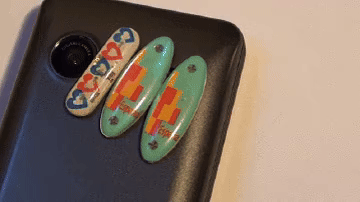

My Blog
Welcome to my engineering blog, where I explore the fascinating intersections of technology, robotics, and innovation. This space serves as my digital notebook—a place where I document interesting discoveries, share technical insights, explain complex engineering concepts in accessible ways, and reflect on the lessons learned from my project experiences.
Why do I blog? Because I believe that knowledge grows when shared. Throughout my engineering journey, I've benefited immensely from the generosity of countless engineers, makers, and educators who took the time to document their work, explain their methodologies, and share their failures alongside their successes. This blog is my way of giving back to that community—of contributing to the collective pool of engineering knowledge that has helped me so much.
The topics I cover are diverse, reflecting my wide-ranging interests in engineering and technology. You'll find deep dives into control algorithms like PID controllers—the unsung heroes that make robots move smoothly and drones hover steadily. I write about nostalgic technology like those battery-free phone stickers from the '90s, exploring the fascinating physics behind RF energy harvesting. Future posts will cover IoT system architectures, sensor integration techniques, machine learning applications in robotics, and practical guides for building your own engineering projects.
My writing philosophy is simple: make complex things understandable without dumbing them down. I aim for that sweet spot where technical accuracy meets accessibility—where someone with basic engineering knowledge can grasp the concepts, while experienced practitioners can still find value in the details and perspectives shared. I use analogies, real-world examples, and visual explanations to make abstract concepts concrete.
Each blog post is thoroughly researched and often includes practical code examples, circuit diagrams, or mathematical explanations where relevant. I believe in learning by doing, so many posts include hands-on exercises or project suggestions that readers can try themselves. The blog is also a space for reflection—sometimes I write about project failures, design mistakes, and debugging challenges, because those experiences often teach us more than smooth successes.
I hope you find these articles informative, inspiring, or at least entertaining. Whether you're a student just starting your engineering journey, a fellow maker working on similar projects, or simply someone curious about how technology works, there's something here for you. Feel free to reach out via my contact page if you have questions, suggestions for topics you'd like me to cover, or just want to discuss engineering and technology.

The Magic of '90s Bling: How Did Those Battery-Free Phone Stickers Actually Work?
Remember those glowing stickers on old Nokia phones? With no battery, they lit up when a call or text arrived. Discover how these tiny marvels harvested RF energy and glimpsed a battery-free future...
Read More

The Unsung Hero of Automation: Why PID Controllers Are the "Magic" Inside Every Robot
Drones hovering, robots moving with perfect grace, even cruise control all rely on the hidden power of PID controllers. Learn how this elegant math enables precise, stable automation everywhere...
Read More